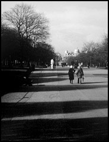

I begun life as a graphic designer, working for a coporate consulting company. I then moved into web design, learning on the job at a small start-up company, just before Y2K.
I then moved to the UK, to work and travel abroad. Luckily, my newly found skills as a web designer landed me a job at one of the major national cable companies in the United Kingdom. This allowed me a steady job, while also being able to travel, and experience living in a different country.
I moved back into graphic design just before leaving the UK, and being made redundant, due to the company being acquird, made the decision to come home very easy.
Since being home for close to 10 years, I've worked as a designer in both the corporate and agency side. My current job is a corporate graphic designer for the Reserve Bank., and wanting to re-learn webdesign is yet another challenge I'm undertaking.
A hobby of mine is photography. Since learning the basics at high school, I have further developed my skills in Sydney, and also studied at the City & Guilds college in London
